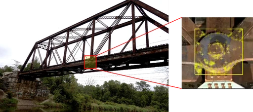

Smart City and Civil Engineering Applications
The concept of Smart Cities has been introduced to categorize a vast area of activities to enhance the quality of life of citizens. A central feature of these activities is the pervasive use of Information and Communication Technologies, helping cities to make better use of limited resources. Indeed, the ASCE Vision for Civil Engineering in 2025 portends a future in which engineers will rely on and leverage real-time access to a living database, sensors, diagnostic tools, and other advanced technologies to ensure that informed decisions are made. Smart Structure Laboratory seeks to develop innovative ways to enhance the quality of life of citizens. Beyond providing convenient life such as smart home, our goal is to develop safe, secure, and sustainable society by using cutting-edge technology.
VISION-BASED STRUCTURAL HEALTH MONITORING

Vibration-based Structural Health Monitoring (SHM) is one of the most popular solutions to assess the safety of civil infrastructure. SHM applications all begins with measuring the dynamic response of structures, but displacement measurement has been limited by the difficulty in requiring a fixed reference point, high cost, and/or low accuracy. In Smart Structure Lab, a vision-based approach is being explored, especially with commercial off-the-shelf technology including Unmanned Aerial System (UAS), cameras, and Microsoft Kinect sensor.
1. Vision-based displacement measurement using UAVs
Vision-based displacement measurement using UAVs is a cutting-edge approach for monitoring structural integrity remotely. By capturing high-resolution images or videos from various angles, UAVs enable precise tracking of structural displacements without the need for physical sensors. This method enhances accessibility, especially for hard-to-reach structures like bridges and towers, allowing for safe and efficient data collection. Additionally, the use of UAVs reduces labor and equipment costs, making it a promising tool for large-scale structural health monitoring.
2. Vision based pedestrian suspension bridge monitoring
We are developing a video-based motion sensing solution to evaluate the safety of pedestrian suspension bridges. This approach enables more efficient and cost-effective condition assessment by measuring applied load and resulting displacements solely through video recordings, eliminating the need for additional sensors on the bridge.
3. Vision based automatic cable displacement measurement using Cable ROI Net and Uni KLT
4. Vision-based cable displacement measurement using side view video
5. Vision-based structural displacement measurement using deep learning and optical flow
This study proposes a novel hybrid approach, termed ToMP-KLT, which combines the KLT tracker with a deep learning-based model. This method harnesses the precision of the KLT tracker under favorable conditions and the robustness of the deep learning-based tracker under adverse conditions. Its effectiveness is validated through simulation-based tests, lab-scale experiments, and field testing on Cheonsa Bridge, demonstrating substantial improvements in tracking robustness against occlusions and varying light conditions.
6. Dual reference KLT for structural vibration measurement using time varying Kalman filter
DIGITAL TRANSFORMATION
1. Automatic classification of bridge component using deep learning
Numerous studies have applied deep learning to identify and classify bridge types automatically. However, these approaches often fall short in distinguishing specific bridge components, such as girders, piers, and other structural elements. To address this limitation, the Smart Structure Lab is developing a network that not only classifies bridge types but also identifies individual components through semantic segmentation, facilitating more effective bridge structure management.
2. Hybrid semantic structure from motion for pedestrian suspension bridges
Semantic Structure from Motion (SSfM) based on semantic segmentation is a digital transformation technology that generates 3D point clouds containing semantic information about structural components. However, conventional SSfM faces limitations in accurately modeling thin components, such as cables, which are challenging to represent in raster format. To address this issue, the Smart Structure Lab is conducting research on Hybrid SSfM, which integrates semantic segmentation and wireframe parsing algorithms to achieve the digital transformation of pedestrian suspension bridges, including cables.
3. Scan-to-FEM for truss bridges
Scan-to-FEM using SSfM is a technique that efficiently automates the generation of Finite Element Models (FEM) based on 3D scan data of structures. SSfM extracts structurally significant elements from the scanned data and incorporates them into the FEM generation process. This involves automatically identifying structural features from 3D point cloud or mesh data and reflecting their connections and physical properties in the FEM. By doing so, SSfM-based Scan-to-FEM reduces the time and cost compared to traditional manual modeling, while providing more accurate and consistent structural analysis models.
OTHERS
1. Seismic performance evaluation using soil-structure interaction with artificial intelligence
Current Structural Health Monitoring (SHM) technology primarily addresses reductions in the rigidity of the structure itself, with accuracy limitations when ground characteristics change due to events like earthquakes. To overcome this, the Smart Structure Lab is developing a system that evaluates structural aging by accounting for the dynamic interaction between the ground and the structure.
2. Post-disaster response
In the minor to moderate natural and man-made disasters, such as earthquakes and fires, people may be trapped inside the building and hurt by the disaster. Considering the trapped victims may be unconscious, there is a big demand of emergency responders to get information on the locations and physical statuses of trapped victims inside a building under disaster. Smart Structure Lab explores methods to help the first responders and the victims using devices such as smartphones, cameras, and wearable devices.
3. Student centric cyber-physical systems
Due to the nature of real-world problems in civil engineering, students have had limited hands-on experiences in classrooms. To address this challenge, the Smart Structure Lab works on developing a new interactive learning tool to bring real-world problems in civil engineering into classrooms that promotes physical interaction among students and enhances their engagement in classrooms.
4. Damage localization using acoustic emission sensors via convolutional neural network and continuous wavelet transform
In this study, we propose a new deep learning-based damage localization method using acoustic emission sensors to automate the damage localization process and improve accuracy. First, the signals from acoustic emission sensors are collected and transformed into time-frequency domain images using continuous wavelet transform. Next, the convolutional neural networks are designed to localize the damage using the continuous wavelet transform images as the input. Finally, the trained convolutional neural networks are used to estimate the location or coordinates of damages.
5. Vision-based weigh-in-motion approach for vehicle load tracking and identification
This study introduces the visual weigh-in-motion (V-WIM) system, a vision-based approach for identifying the load and location of vehicles moving on a traffic infrastructure. The V-WIM system comprises two main modules, including the vehicle weight estimation module and the vehicle tracking and location estimation module.